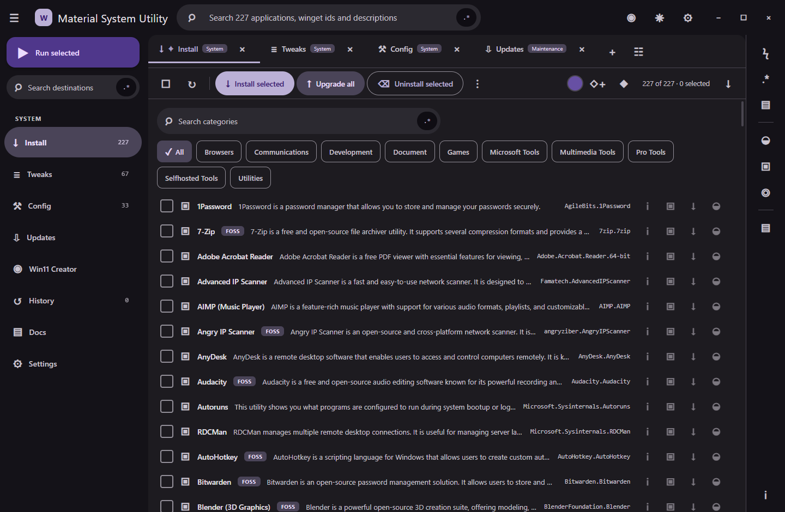

Verified baseline
A focused, safer way to manage exact WinGet packages
Browse a reviewed catalogue, search locally, and run exact install, uninstall, or upgrade operations from a Material Design desktop shell.
Installer status: No verified public installer is linked from this site yet.
Real built artifact
Dark theme · 1440 × 940
The safe package catalogue

Release boundary
Available means implemented and verified
Exact package actions
Install and uninstall validated WinGet or Microsoft Store catalogue identifiers. Upgrade all uses WinGet’s supported non-interactive path.
Search and workspace
Local catalogue search, an adjacent regex builder, browser-style tabs, groups, pinning, and a persisted appearance subset.
System modification adapters
Tweaks, optional-feature changes, Windows Update policy profiles, image creation, locks, and authenticators are not enabled in this baseline.
What works in this build
This list distinguishes implemented behavior from catalogue-only content and unavailable future work.
Regex builderJavaScript RegExp · evaluated locally
Plain-text filtering is active.
Exact install and uninstall
Only bounded catalogue identifiers reach the main process. Store entries use an explicit msstore:<StoreId> form and are separated into a validated source and identifier.
Upgrade all
Requests winget upgrade --all with silent, non-interactive flags and package/source agreement flags.
Catalogue and workspace
Local application catalogue, installed-package detection, search, regex mode, category filters, tabs, pinning, groups, and a persisted theme, density, accent, font, scale, and weight subset.
Read the workspace guideOne-click build paths
build.bat builds the runnable application. build-installer.bat produces and verifies unsigned Squirrel.Windows setup and update artifacts.
Higher-risk system adapters
The catalogue contains tweak and optional-feature records, but execution is deliberately refused with exit code 78 until bounded, reviewed adapters exist.
Read the release boundaryApplication updater and additional contracts
Installed builds have visible Squirrel update states, a bounded background schedule, an unsigned-installer warning, and explicit restart control. Release-backed download and restart proof still needs the first immutable release. Locks, TOTP, scheduled settings, shared modes, narration, personal-vocabulary loading, and complete export coverage remain unavailable.
No capabilities match this filter.
Build and use the verified baseline
No installer link is shown until a public release asset has been independently verified.
Build the runnable application
From a checkout on Windows, run the root build script. It checks or obtains the required toolchain, installs project dependencies, builds the TypeScript application, copies local assets, and runs the baseline verifier.
build.bat /sBuild the installer
The installer route performs the same checks, creates unsigned Squirrel.Windows artifacts, verifies that the setup executable is unsigned, and prints its path and SHA-256.
build-installer.bat /sChoose exact package records
Search by application name, description, category, or WinGet identifier. Select reviewed rows, inspect the count, then run the exact package action.
Read the real result
Operations are queued one at a time and report the actual process exit code and output. A failure remains a failure; the interface does not guess success.
Bounded execution, explicit omissions
The baseline intentionally narrows what can cross from the renderer into the operating-system process boundary.
Context-isolated renderer bridge
The desktop window uses an explicit preload bridge, context isolation, and no Node.js integration in renderer content.
Validated identifiers, argument arrays
Package identifiers are checked against bounded patterns and passed as argument arrays. Renderer text is not evaluated as PowerShell or a shell command.
No silent third-party bootstrap
The application uses the operating system’s supported WinGet client. It does not download or execute an arbitrary package-manager bootstrap script.
Unsupported work fails closed
Tweaks, optional-feature changes, update profiles, and other unsupported adapters return a clear unavailable result instead of simulating completion.
Customize this documentation
These visitor preferences stay in local browser storage. They do not configure the desktop application.
Settings regex builderJavaScript RegExp · evaluated locally
Plain-text filtering is active.
Language mode
Changes the site’s primary navigation and key explanatory copy.
Default: English · stored locally by this siteEnglish funny level
Styles optional site narration from serious to playful. Safety facts do not change.
Default: 2 · stored locally by this siteCantonese funny level
Styles optional Cantonese narration independently from the English level.
Default: 3 · stored locally by this siteTheme
Choose light, dark, or follow the operating-system preference.
Default: System · stored locally by this siteDensity
Adjusts spacing while preserving touch target sizes.
Default: Comfortable · stored locally by this siteTab rail position
Moves the documentation tab list. Left is the default.
Default: Left · stored locally by this siteReset site preferences
Clears this site’s locally stored language, humor, theme, density, and dock choices.
This does not change the desktop application.No settings match this filter.